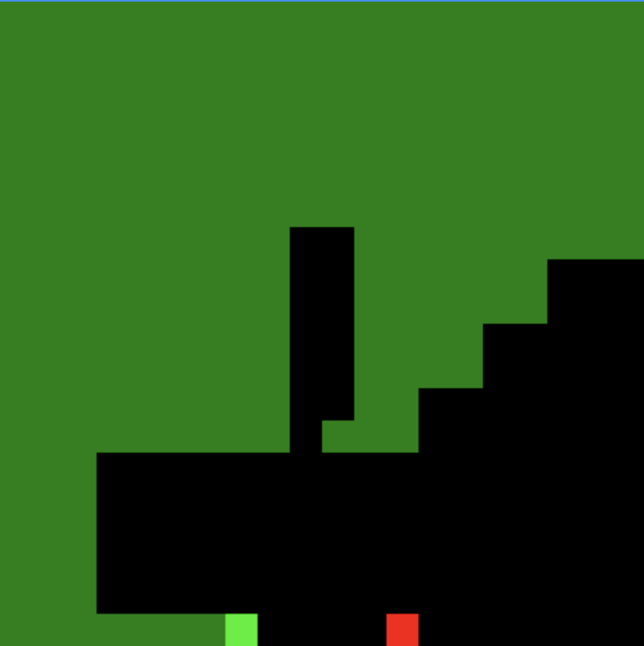
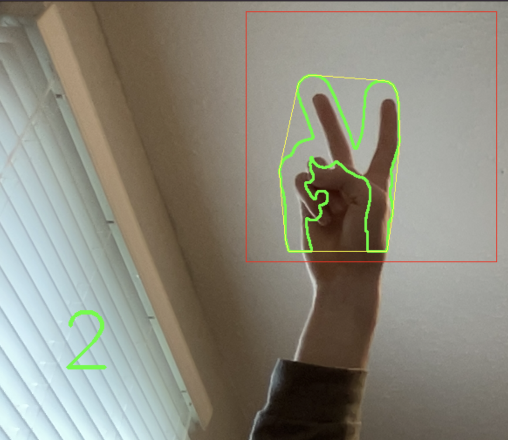

Hey there, my names jack_
I'm a Canadian software developer with a passion for competitive programming, full stack web design & creating functional and effective programs
Get to know me
Hi, I'm Jack McAsh,
I'm currently a Senior high school student at St. Mary's High School in Owen Sound, Ontario. In my spare time I enjoy solving online computer science problems, studying algorithms & data structures and improving my programming skills.
Outside of school and programming, I enjoy studying and researching stocks and general finance, listening to music, learning about cars, and playing hockey and other sports.
My skills
Here's a list of my relevant, computer related skills, in no particular order;
-
Over a decade of familiarity and experience in Windows and MacOS
-
Intermediate level of knowledge in major OOP languages such as C++, Java and Python
-
An extensive amount of knowledge in HTML, CSS, and JavaScript
-
Extreme familiarity with git and github
-
Experience in creating and completing large scale projects concerning both hardware and software
-
Lead programmer in a successful High-School robotics club over two years with the use of the OpenCV library
-
Experience using the Unity game engine and C# to create games and applications
-
Competitive programming skills mostly because of the CCC from the University of Waterloo
-
Comfortable experience with the MacOS terminal and command line interfaces
-
Years of experience in several different IDE's, such as Visual Studio, VScode, notepad++, Adobe Dreamweaver and Adobe Brackets
Check out some of my favorite projects
Hamiltonian Snake
A game of snake which plays itself by generating a hamiltonian circuit to follow, which ensures it will always win.
Check it out in actionWired to Bluetooth Headphones

A pair of previously wired headphones which I converted to bluetooth with the use of a bluetooth receiver.
Check em' outBubble Fett Robot

A robot which my friends and I built for the 2020 First Tech Competition where I assumed the role of lead programmer.
Check out the folderCCC Solutions Archive
I've decided to start solving past CCC problems for experience and practice with competitive programming. So now, I've started to attempt to make a complete archive of the solutions.
Check out the solutions repoOpenCV Finger Detection
A computer vision project which detects the number of fingers on a hand, written in c++.
Check out the source code